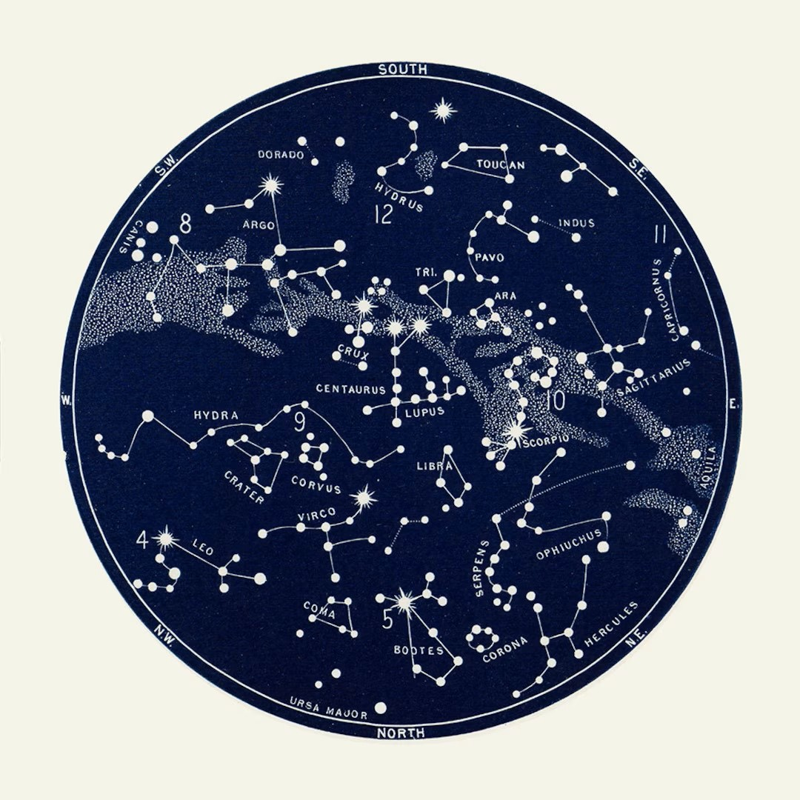
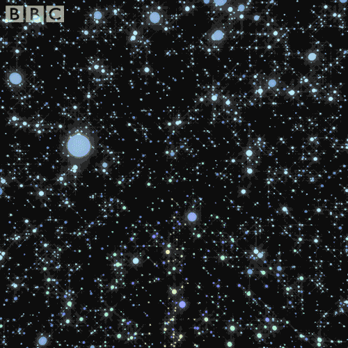

Constellation Maps
INFO 526 - Fall 2023 - Project Final
Background
High-level Goal
Develop a Shiny app that generates constellation maps that utilizes interactive elements, incorporating computational and visualization techniques.

Goals & Motivations
Increasing engagement by personalizing the experience through various elements: color usage, map location, time zone, latitude/longitude location
Designing with a user-friendly interface to ensure accessibility for people of all backgrounds and levels of astronomical knowledge
Providing annotations to provide readability and educational context for a wide range of users, including astronomy beginners
Dataset
The datasets are available in GeoJSON (
*.geojson) and GeoPackage (*.gpkg) formatsRepresents celestial objects’ positions as of the J2000 epoch
Data used:
mw= Milky Way datasetconstellations.lines= Constellation Lines datasetstars.8= Stars dataset
Analysis Approach
- Develop a Shiny app for personalized constellation maps with user input
- Enhance user engagement in stargazing from various locations time zones and even user bases
- Prioritize accessibility through a user-friendly interface and colorblind-friendly design
- Provide contextual annotations for users with different levels of astronomical knowledge
Results
Conclusion
- Constellations aid in locating stars, galaxies, and other celestial bodies, offering reference points for astronomical observation and research.
- Observations of constellations contribute to scientific discoveries, aiding in the understanding of star formation, stellar evolution, and the dynamics of galaxies.
- Constellations serve as educational tools, engaging learners of all ages in the study of astronomy and offer an accessible entry point for teaching basic astronomical concepts.
Limitations
Starmap app doesn’t display any data like names and information about the constellations.
Some starmap apps can become complex due to the abundance use of features, making the interface crowded, confusing the new users.
Sometimes due to incomplete or inaccurate data, might lead to misidentification of celestial objects or missing information about certain stars or constellations.
Thank you for listening! Any questions?
